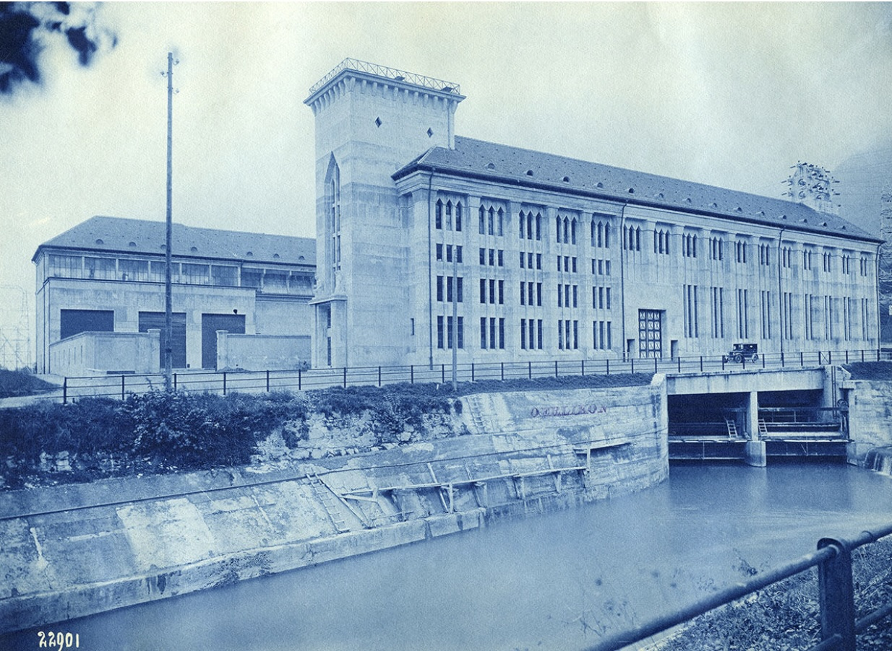

Normalität wird aktiv ausgehandelt und nicht vorausgesetzt.
Synonyme: Normalität / Alltag; Aushandlung / Anpassung
Unterschiedliche Erwartungen kollidieren.
Synonyme: fragil / brüchig; Erwartung / Anspruch